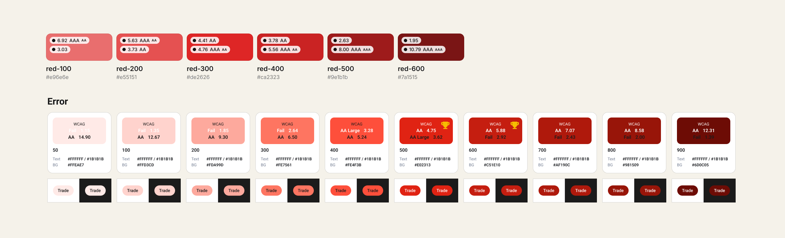
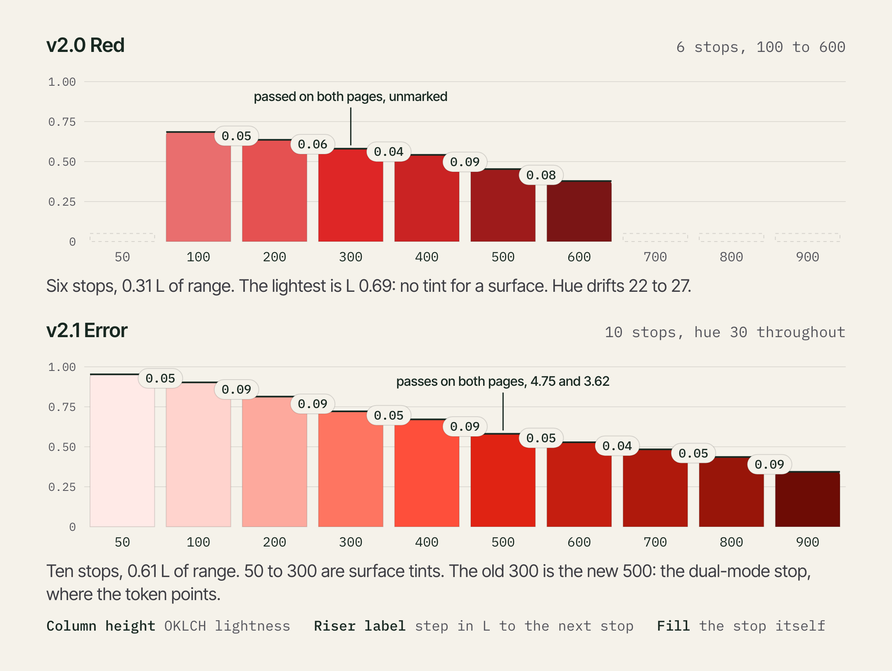
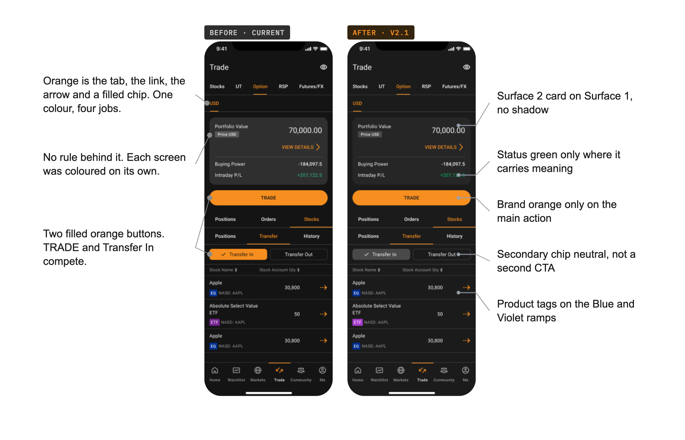
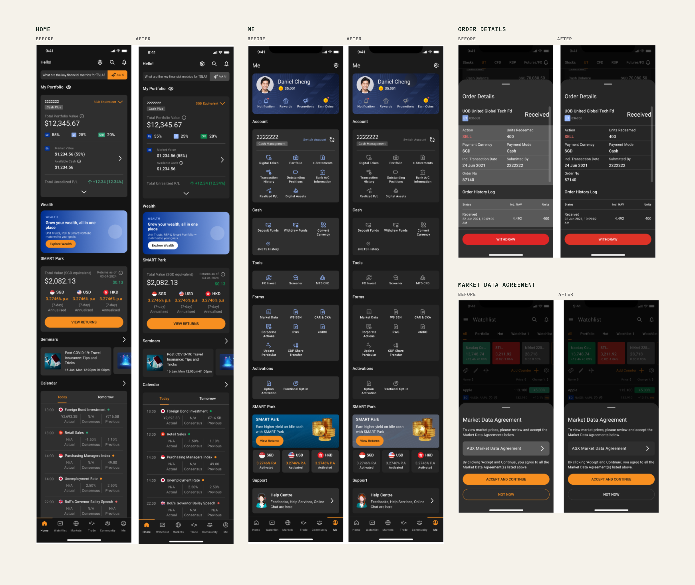

One red, ten stops.
A design system colour ramp, before and after. Six reds that all started at the fill end became ten stops, each read against the two on-colours the app uses: white and #1B1B1B.
A palette with badges is not a ramp
I lead the design system for a trading app. Investors read these colours every day. Designers and developers build from them.
Version 2.0 put contrast badges on every swatch and marked no answer. A designer picking a red for a button, a banner or a dark screen had to guess which stop was safe. The ramp also stopped at six stops that all started at the fill end.
Four rules the ramp had to meet
- Two pages. Every colour has to read on white and on #1B1B1B.
- One fill for both modes. A fill with a white label needs 4.5:1 on the label and 3:1 against each page. That pins its relative luminance to 0.133 to 0.183.
- Brand colours are fixed. Blue #0043CE and orange #F78F20 were already set, so Error had to fit around them.
- Steps you can tell apart. Under 1.2:1 between neighbours and two stops read as one.
Six stops don't reach
Top row: v2.0 Red. Bottom row: v2.1 Error, at the same width, so the missing stops show as empty space. v2.0 opens at #E96E6E, which is 3.03 on white, a fill. v2.1 opens at a tint that holds dark text at 14.9.

A ramp is a stepper. Lightness per stop, v2.0 against v2.1:

| v2.0 Red | v2.1 Error | |
|---|---|---|
| Stops | 6 | 10 |
| Lightness range | 0.31 | 0.61 |
| Hue | drifts 22 to 27 | held at 30 |
| Step between stops | 1.17 to 1.44 | 1.18 to 1.45 |
| Passes both pages | 300 and 400, unmarked | 500, marked |
What I chose, and what I gave up

The same trade ticket, before and after v2.1. Before: the current app colours, applied screen by screen. After: the v2.1 palette, applied by rule.
- Brighter fill over safer contrast. I solved two reds for the one-fill rule. One traded a little page contrast for a brighter, more brand-like colour. The other did the reverse. I took the brighter one.
- Cut the lookalikes. Four reds sat 1.06 to 1.12:1 apart and looked the same. I kept one, dropped two as duplicates, and derived two fillers on the ramp's own hue and chroma.
- Add a surface tint. v2.0 had no stop light enough to sit behind text. v2.1 starts at one.
- Hold the hue. Dark reds stay red. They don't drift toward brown, which is what happened to the amber ramp.
- Script proposes, I decide. Values are derived in OKLCH by script, judged by eye, and placed on the board by hand. The script never shipped a stop. I did.
Neutrals step up by elevation. The brand fill sits only on the main action. Status colour appears only where it means something. Every text and icon colour passes WCAG on dark and on light. Light mode comes from the same tokens, so there is no second palette to maintain.
For Error, one fill, stop 500, serves both modes with a white label. The 46 colours are in code as tokens.
Same rules, five real screens, dark mode
I applied the v2.1 palette by rule to five screens in both modes, ten in all. Dark mode is shown here, before on the left and after on the right. The Trade screen is under Decisions.

- Contrast recomputed from the hex for every Error stop. My Foundations file records every text and icon colour on these screens as passing WCAG, on dark and on light.
- Greys step up by elevation. A card on a card of the same colour now moves one level.
- Status colour appears only where it carries meaning. Orange stays on the main action.
What I'd fix, and a check for your own ramp
Two things on my own board don't meet my own rules. Error 600 carries a trophy with a 2.92 reading on #1B1B1B, which fails the 3:1 rule, so only 500 should have it. And the step from 50 to 100 is 1.18, a hair under my 1.2 line.
Five questions I'd now ask of any ramp:
- Do two stops look the same? The first cut of v2.1 had four reds 1.06 to 1.12:1 apart. The board now steps 1.18 to 1.45.
- Is the lightest stop a surface or a fill? v2.0 opens at a fill. v2.1 opens at a 50 that sits behind text.
- Does one stop take a white label in both modes? That needs 4.5 on the label and 3 against white and against the dark page. Mark it.
- Can you read contrast from the step numbers? The US Web Design System and Material Design both fix a gap between step numbers, so any two steps that far apart meet a contrast level: 40 apart for 3:1, 50 for 4.5:1, 70 for 7:1. A designer picks a pair by number and doesn't need a checker. Material treats it as a rule of thumb, so a real ratio is still worth checking.
- Do the red and the green stay apart without hue? Many colour-blind users can't tell a red from a green by hue alone. Giving the two different lightness, and adding a sign or icon, keeps profit and loss readable. WCAG asks the same: colour can't be the only signal.
The old row had the colour. Nobody had asked the questions.